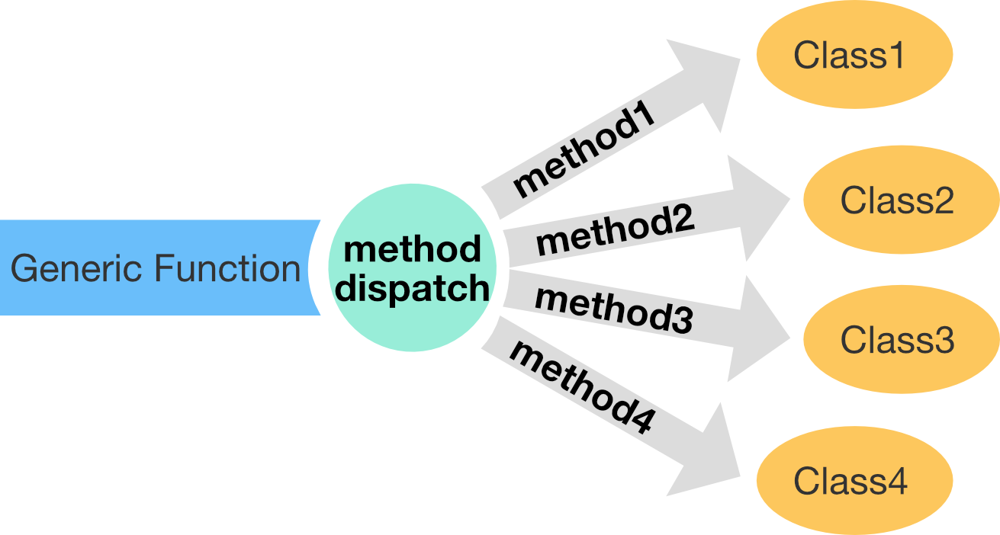
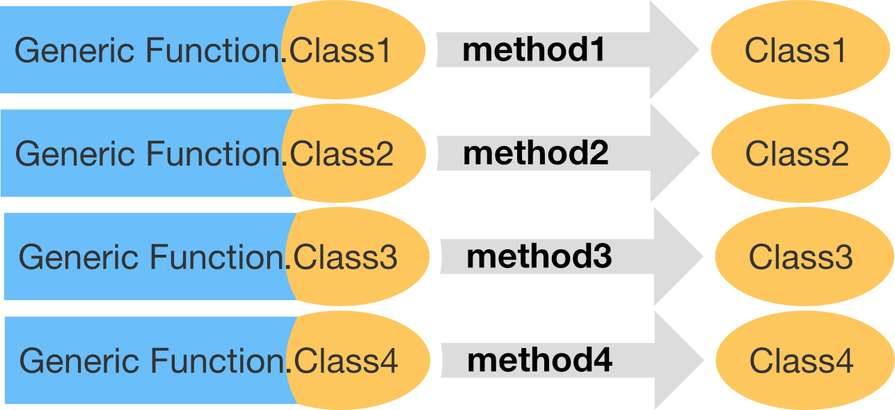

Some S3 fun facts:
Outline
For interactive helper functions we use:
library(sloop)S3 object = base type + class attribute (+ ...)
An S3 object behaves differently from its underlying base type whenever it’s passed to a generic (short for generic function).
What is a generic?
Depending on the class of an argument to the generic it uses a different implementation.
You can use sloop::ftype() to find out if a function is generic:
ftype(print)
ftype(str)
ftype(summary)time <- strptime(c("2017-01-01", "2020-05-04 03:21"), "%Y-%m-%d")
str(time) # generic `str()` hides the fact that `POSIXlt` is built on top of a list## POSIXlt[1:2], format: "2017-01-01" "2020-05-04"attributes(time) # attributes shows that it has a class, and several names## $names
## [1] "sec" "min" "hour" "mday" "mon" "year" "wday" "yday"
## [9] "isdst" "zone" "gmtoff"
##
## $class
## [1] "POSIXlt" "POSIXt"str(unclass(time)) # using `str()` on unclassed time shows the list structure## List of 11
## $ sec : num [1:2] 0 0
## $ min : int [1:2] 0 0
## $ hour : int [1:2] 0 0
## $ mday : int [1:2] 1 4
## $ mon : int [1:2] 0 4
## $ year : int [1:2] 117 120
## $ wday : int [1:2] 0 1
## $ yday : int [1:2] 0 124
## $ isdst : int [1:2] 0 1
## $ zone : chr [1:2] "CET" "CEST"
## $ gmtoff: int [1:2] NA NA
You can use sloop::s3_dispatch() for details on the method dispatch
f <- factor(c("a", "b", "c"))
s3_dispatch(print(f))## => print.factor
## * print.defaultdf <- data.frame(names=c("a", "b", "c"), age=c(20, 30, 66), income=factor(c("low", "middle", "high")))
summary(df)## names age income
## Length:3 Min. :20.00 high :1
## Class :character 1st Qu.:25.00 low :1
## Mode :character Median :30.00 middle:1
## Mean :38.67
## 3rd Qu.:48.00
## Max. :66.00s3_dispatch(summary(df$names))## summary.character
## => summary.defaults3_dispatch(summary(df$age))## summary.double
## summary.numeric
## => summary.defaults3_dispatch(summary(df$income))## => summary.factor
## * summary.defaultUnder the hood the generic is calling class specific functions with a special naming scheme (you should never use them manually):

With sloop::s3_get_method you can see the source code for most S3 methods
weighted.mean.Date## Error in eval(expr, envir, enclos): object 'weighted.mean.Date' not founds3_get_method(weighted.mean.Date)## function (x, w, ...)
## .Date(weighted.mean(unclass(x), w, ...))
## <bytecode: 0x7fdb24fa1c00>
## <environment: namespace:stats>t.test() and t.data.frame(). When is each function called?t.test() and t.data.frame(). When is each function called?t.test():
ftype(t.test)## [1] "S3" "generic"t.test() is a generic. t.test() has a . in its name, even though it doesn’t call a specific class. In this case it is just to separate the two words “t” and “test”.
t.data.frame():
t(x)
ftype(t.data.frame)## [1] "S3" "method"t.data.frame() is actually the function t() which is called with a specific method for the class data.frame. It is called when you pass a data.frame to t().
. in their name but are not S3 methods.. in their name but are not S3 methods.ftype(data.frame)## [1] "function"ftype(is.data.frame)## [1] "function"ftype(Sys.Date)## [1] "function"ftype(as.character)## [1] "primitive" "generic"ftype(is.na)## [1] "primitive" "generic"ftype(is.logical)## [1] "primitive"ftype(new.env)## [1] "internal"ftype(set.seed)## [1] "internal"ftype(as.data.frame)## [1] "S3" "generic"Go to packages -> base for a list of base functions.
as.data.frame.data.frame() method do? Why is it confusing? How could you avoid this confusion in your own code?as.data.frame.data.frame() method do? Why is it confusing? How could you avoid this confusion in your own code?as.data.frame.data.frame() is called when you pass a data.frame to as.data.frame():
s3_dispatch(as.data.frame(df))## => as.data.frame.data.frame
## * as.data.frame.defaultYou can avoid confusion by just calling as.data.frame().
S3 has no formal definition of a class: to make an object an instance of a class, you simply set the class attribute.
# Create and assign class in one step
x <- structure(list(), class = "my_class")
# Create, then set class
x <- list()
class(x) <- "my_class"Determine the class of an object:
class(x)## [1] "my_class"inherits(x, "my_class")## [1] TRUEinherits(x, "your_class")## [1] FALSES3 has no checks for correctness:
# Create a linear model
mod <- lm(log(mpg) ~ log(disp), data = mtcars)
class(mod)## [1] "lm"print(mod)##
## Call:
## lm(formula = log(mpg) ~ log(disp), data = mtcars)
##
## Coefficients:
## (Intercept) log(disp)
## 5.3810 -0.4586class(mod) <- "Date"
# Unsurprisingly this doesn't work very well
print(mod)## Error in as.POSIXlt.Date(x): 'list' object cannot be coerced to type 'double'For creating your own class, you should provide:
A low-level constructor, new_myclass(), that efficiently creates new objects with the correct structure.
A validator, validate_myclass(), that performs more computationally expensive checks to ensure that the object has correct values.
A user-friendly helper, myclass(), that provides a convenient way for others to create objects of your class.
The constructor should follow three principles:
new_myclass()A constructor for difftime:
new_difftime <- function(x = double(), units = "secs") {
stopifnot(is.double(x))
units <- match.arg(units, c("secs", "mins", "hours", "days", "weeks"))
structure(x,
class = "difftime",
units = units
)
}
new_difftime(c(1, 10, 3600), "secs")## Time differences in secs
## [1] 1 10 3600new_difftime(52, "weeks")## Time difference of 52 weeksA constructor only checks that types are correct –> Validators for more complex classes
For the constructor of an object with class factor…
new_factor <- function(x = integer(), levels = character()) {
stopifnot(is.integer(x))
stopifnot(is.character(levels))
structure(
x,
levels = levels,
class = "factor"
)
}
new_factor(1:5, "a")## Error in as.character.factor(x): malformed factornew_factor(0:1, "a")## Error in as.character.factor(x): malformed factor… we could build this validator:
validate_factor <- function(x) { # the argument of this function, is the output of the constructor function
values <- unclass(x)
levels <- attr(x, "levels")
if (!all(!is.na(values) & values > 0)) {
stop(
"All `x` values must be non-missing and greater than zero",
call. = FALSE
)
}
if (length(levels) < max(values)) {
stop(
"There must be at least as many `levels` as possible values in `x`",
call. = FALSE
)
}
x
}
validate_factor(new_factor(1:5, "a"))## Error: There must be at least as many `levels` as possible values in `x`validate_factor(new_factor(0:1, "a"))## Error: All `x` values must be non-missing and greater than zeronew_factor <- function(x = integer(), levels = character()) {
stopifnot(is.integer(x))
stopifnot(is.character(levels))
structure(
x,
levels = levels,
class = "factor"
)
}x <- new_factor(1:5, "a")
unclass(x)
attr(x, "levels")A helper should always:
myclass()Sometime the helper just needs to coerce
new_difftime(1:10)## Error in new_difftime(1:10): is.double(x) is not TRUEProblem: integer is passed as argument, where double is expexted.
Helper:
difftime <- function(x = double(), units = "secs") {
x <- as.double(x) # coerces input to double
new_difftime(x, units = units) # calls the constructor, to create an object with class attribute
}
difftime(1:10)## Time differences in secs
## [1] 1 2 3 4 5 6 7 8 9 10new_data.frame <- function(x= list(), names=character(), row.names){
stopifnot(is.list(x))
stopifnot(is.character(names))
structure(x,
class="data.frame",
names=names,
row.names=row.names)
}
new_data.frame(list(c("a", "b", "c"), 1:3), names=c("letters", "numbers"), row.names=1:3)A data frame is built on a list. It uses the attributes “names”, and “row.names”.
Restrictions? Names?
# space for more# space to play
validate_as.roman <- function(x){
values <- unclass(x)
if (!all(!is.na(values) & values > 0 & values < 3899)) { # I guess it would also work with only the !is.na()-part. Any numbers outside the range 0:3899 will be coerced to NA by the constructor
stop(
"All `x` values must be non-missing and between 1 and 3899",
call. = FALSE
)
}
x
}
r1 <- as.roman(2020)
r2 <- as.roman(4000)
validate_as.roman(r1)
validate_as.roman(r2)Job of S3 generic –> find the right implementation for a class.
mean## function (x, ...)
## UseMethod("mean")
## <bytecode: 0x7fdb1e380ca8>
## <environment: namespace:base>Creating your own generic:
my_new_generic <- function(x) {
UseMethod("my_new_generic")
}What does the UseMethod() do?
paste0("generic", ".", c(class(x), "default"))
x <- Sys.Date()
s3_dispatch(print(x))## => print.Date
## * print.defaultx <- matrix(1:10, nrow = 2)
s3_dispatch(mean(x))## mean.matrix
## mean.integer
## mean.numeric
## => mean.defaults3_dispatch(sum(Sys.time()))## sum.POSIXct
## sum.POSIXt
## sum.default
## => Summary.POSIXct
## Summary.POSIXt
## Summary.default
## -> sum (internal)sloop::s3_methods_generic(): Let’s you find all possible methods defined for a genericsloop::s3_methods_class(): Let’s you find all possible methods defined for a classs3_methods_generic("mean")s3_methods_class("ordered")t() and t.test() and confirm that t.test() is an S3 generic and not an S3 method. What happens if you create an object with class test and call t() with it? Why?x <- structure(1:10, class = "test")
t(x)t() and t.test() and confirm that t.test() is an S3 generic and not an S3 method. What happens if you create an object with class test and call t() with it? Why?x <- structure(1:10, class = "test")
t(x)## [,1] [,2] [,3] [,4] [,5] [,6] [,7] [,8] [,9] [,10]
## [1,] 1 2 3 4 5 6 7 8 9 10
## attr(,"class")
## [1] "test"ftype(t)
ftype(t.test)
s3_dispatch(t(x))table class have methods for?table class have methods for?s3_methods_class("table")ecdf class have methods for?ecdf class have methods for?s3_methods_class("ecdf")generic_names <- Filter(isGeneric,ls(all.names=TRUE, env = baseenv())) # Finding all function names of base generics
generic_methods <- map(generic_names, s3_methods_generic) # Finding all associated methods
no_methods <- map_int(generic_methods, nrow) # Create a numeric vector of the number of methods per generic
generic_names[which.max(no_methods)] # get the name of the generic with the most methods## [1] "["UseMethod() and explain why the following code returns the results that it does. What two usual rules of function evaluation does UseMethod() violate?g <- function(x) {
x <- 10
y <- 10
UseMethod("g")
}
g.default <- function(x) c(x = x, y = y)
x <- 1
y <- 1
g(x)UseMethod() and explain why the following code returns the results that it does. What two usual rules of function evaluation does UseMethod() violate?g <- function(x) {
x <- 10
y <- 10
UseMethod("g")
}
g.default <- function(x) c(x = x, y = y)
x <- 1
y <- 1
g(x)## x y
## 1 10It violates name masking (see 6.4.1).
# space to play[? Why is this a hard question to answer?[? Why is this a hard question to answer?args(`[`)13.2.1 - 4. Describe the difference in behaviour in these two calls.
set.seed(1014)
some_days <- as.Date("2017-01-31") + sample(10, 5)
mean(some_days)
mean(unclass(some_days))13.2.1 - 4. Describe the difference in behaviour in these two calls.
set.seed(1014)
some_days <- as.Date("2017-01-31") + sample(10, 5)
mean(some_days)## [1] "2017-02-06"mean(unclass(some_days))## [1] 17203.4Dates are represented as the number of days since 1970-01-01.
So when we unclass some_days it is becoming simply a double:
typeof(unclass(some_days))and the mean of unclass(some_days) becomes the mean of days since 1970-01-01 for these Dates.
13.2.1 - 5. What class of object does the following code return? What base type is it built on? What attributes does it use?
x <- ecdf(rpois(100, 10))
x13.2.1 - 5. What class of object does the following code return? What base type is it built on? What attributes does it use?
x <- ecdf(rpois(100, 10))
x## Empirical CDF
## Call: ecdf(rpois(100, 10))
## x[1:18] = 2, 3, 4, ..., 18, 19class(x)
str(unclass(x))
attributes(x)13.2.1 - 6. What class of object does the following code return? What base type is it built on? What attributes does it use?
x <- table(rpois(100, 5))
x13.2.1 - 6. What class of object does the following code return? What base type is it built on? What attributes does it use?
x <- table(rpois(100, 5))
x##
## 1 2 3 4 5 6 7 8 9 10
## 7 5 18 14 15 15 14 4 5 3class(x)
str(unclass(x))
attributes(x)13-3-4 - 2. Enhance my factor() helper to have better behaviour when one or more values is not found in levels. What does base::factor() do in this situation?
13-3-4 - 2. Enhance my factor() helper to have better behaviour when one or more values is not found in levels. What does base::factor() do in this situation?
factor <- function(x = character(), levels = unique(x)) {
ind <- match(x, levels)
validate_factor(new_factor(ind, levels))
}
factor(c("a", "a", "b"))13-3-4 - 3. Carefully read the source code of factor(). What does it do that my constructor does not?
13-3-4 - 3. Carefully read the source code of factor(). What does it do that my constructor does not?
Hadley’s nes_factor()
function(x = integer(), levels = character()) {
stopifnot(is.integer(x))
stopifnot(is.character(levels))
structure(
x,
levels = levels,
class = "factor"
)
}base::factor()
function (x = character(), levels, labels = levels, exclude = NA,
ordered = is.ordered(x), nmax = NA)
{
if (is.null(x))
x <- character()
nx <- names(x)
if (missing(levels)) {
y <- unique(x, nmax = nmax)
ind <- order(y)
levels <- unique(as.character(y)[ind])
}
force(ordered)
if (!is.character(x))
x <- as.character(x)
levels <- levels[is.na(match(levels, exclude))]
f <- match(x, levels)
if (!is.null(nx))
names(f) <- nx
if (missing(labels)) {
levels(f) <- as.character(levels)
}
else {
nlab <- length(labels)
if (nlab == length(levels)) {
nlevs <- unique(xlevs <- as.character(labels))
at <- attributes(f)
at$levels <- nlevs
f <- match(xlevs, nlevs)[f]
attributes(f) <- at
}
else if (nlab == 1L)
levels(f) <- paste0(labels, seq_along(levels))
else stop(gettextf("invalid 'labels'; length %d should be 1 or %d",
nlab, length(levels)), domain = NA)
}
class(f) <- c(if (ordered) "ordered", "factor")
f
}base factor() gives a class either “ordered” or “factor”.
13-3-4 - 4. Factors have an optional “contrasts” attribute. Read the help for C(), and briefly describe the purpose of the attribute. What type should it have? Rewrite the new_factor() constructor to include this attribute.
# space to play